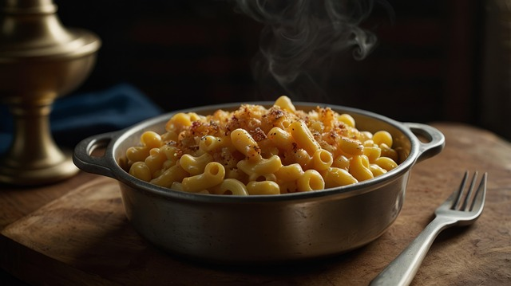

Home
Macaroni and Cheese
Description
Quick, easy, and tasty macaroni and cheese dish. Fancy, designer mac and cheese oftten costs forty dollars to prepare when you have so many expensive cheeses, but they aren't always the best tasting. This simple recipe is cheap and tasty.
Ingredients
- 1 box elbow macaroni
- 1/4 cup butter
- 1/4 cup all-purpose flour
- 1/2 teaspoon salt
- ground black pepper to taste
- 2 cups milk
- 2 cups shredded cheddar cheese
Steps
- Gather ingredients.
- Bring a large pot of lightly salted watter to a boil. Cook elbow macaroni in the boiling water, stirring occasionally until cooked through but firm to the bite, 8 minutes.
- At the same time, melt butter in a saucepan over medium heat.
- Add flour, salt, and pepper and stir until smooth, about 5 minutets.
- Pour in milk slowly, while stirring continuously. Continue to cook and stir until mixture is smooth and bubbling, about 5 minutes, make sure the milk doesn't burn.
- Add cheddar cheese and stir until meltted, 2 tot 4 minutes.
- Drain macaroni and fold into cheese sauce until coated.
- Serve hot and enjoy!